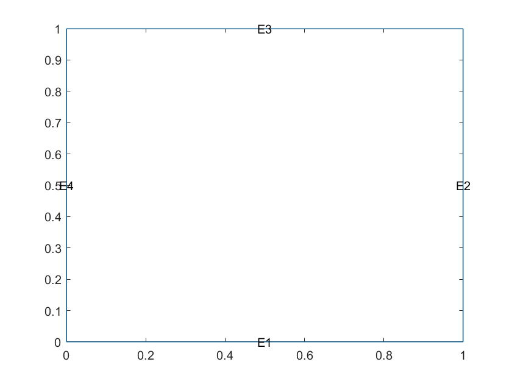
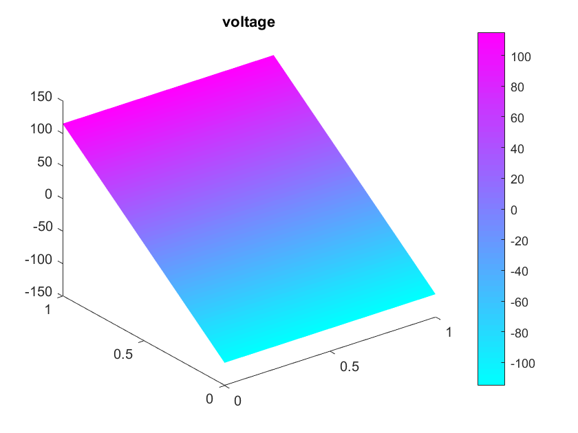
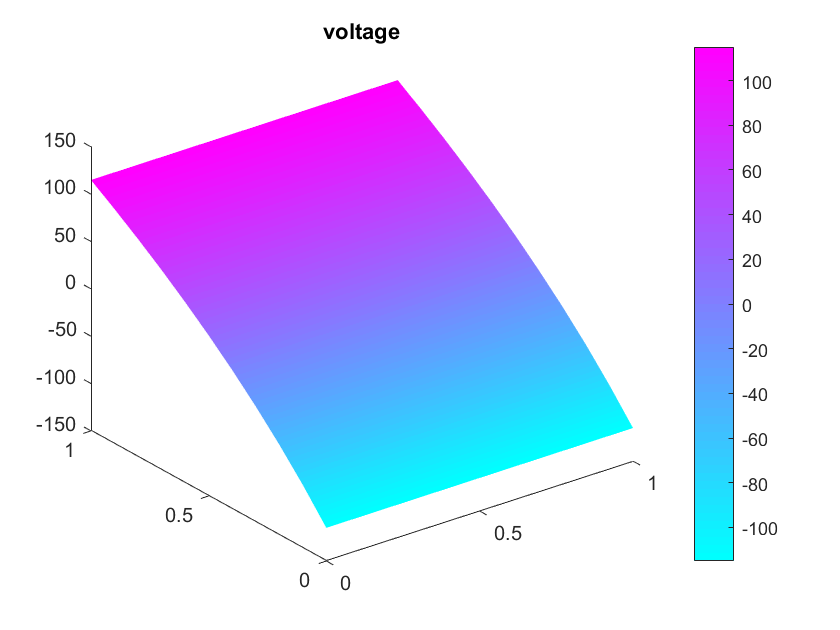
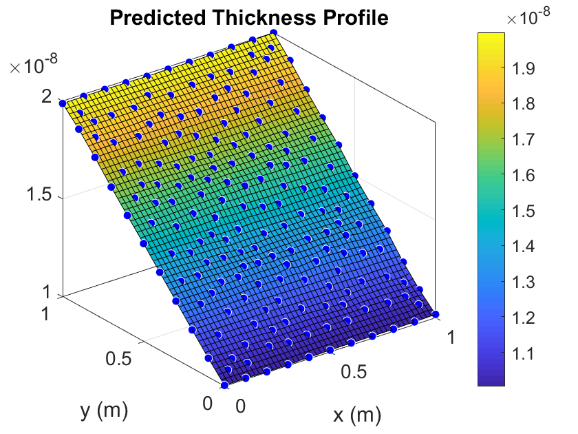
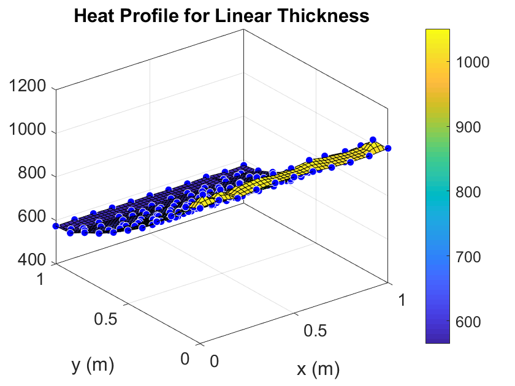
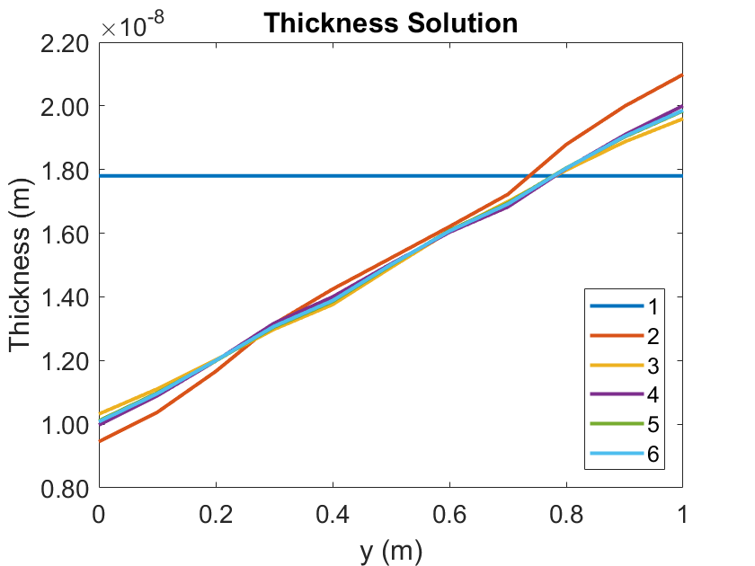

Contents
%%%% % Script for running the MATLAB iterative method for thickness prediction % of a square geometry %%%%
Clearing MATLAB workspace and command window, and closing all figures
clear;
close all;
clc;
System parameters
tol = error tolerance for terminating iteration sigma = conductivity of material V = voltage applied to the busbars
tol = 0.5; global sigma V; sigma = 1E6; V = 115; % Create solution movie v = VideoWriter('solution.avi'); v.FrameRate = 2; open(v);
Importing data and preforming interpolation
delta_data = initial thickness data heat_data = desired heating data
delta_data = dlmread('thickness_init.csv',',',0,0); heat_data = dlmread('qj_test.csv',',',0,0); x = delta_data(:,1); y = delta_data(:,2); delta = delta_data(:,3); q_des = heat_data(:,3); % Continuous function of desired q q_des_c = fit([x,y],q_des,'linearinterp'); % Continuous function of delta delta_c = fit([x,y],delta,'linearinterp');
PDE model setup
model = createpde(); % Generates a square geom_descrip = [3;4;0;1;1;0;0;0;1;1;]; dl = decsg(geom_descrip); geometryFromEdges(model,dl); figure(1); pdegplot(model,'EdgeLabels','on');
Apply boundary conditions
applyBoundaryCondition(model,'dirichlet','Edge',1,'r',-V); applyBoundaryCondition(model,'dirichlet','Edge',3,'r',V); applyBoundaryCondition(model,'neumann','Edge',[2,4],'g',0); % Apply PDE coefficient conductance_handle = @(location,state) delta_c(location.x,location.y); specifyCoefficients(model,'m',0,'d',0,'c',conductance_handle,'a',0,'f',0,'face',1); % Create mesh generateMesh(model); % Solve the PDE figure(2); result = solvepde(model); voltage = result.NodalSolution; % Plot solution pdeplot(model,'XYData',voltage,'ZData',voltage); title('voltage'); drawnow
Calculate joule heating
[e_x, e_y] = evaluateGradient(result,x,y); q_cal = delta.*(e_x.^2+e_y.^2)*sigma; err = abs(q_cal-q_des); err = mean(err);
Begin iteration
i = 0; while (err > tol) if mod(i,4) == 0 fprintf('Iteration number %g \n', i/4+1) fprintf('The error is %g \n \n', err) % Plot for solution movie figure(5); plot(0:0.1:1, delta_c(0.4*ones(1,length(0:0.1:1)), 0:0.1:1), 'LineWidth', 2); set(gca, 'FontSize', 14); ytickformat('%.2f') xlabel('y (m)'); ylabel('Thickness (m)'); title('Thickness Solution'); axis([0 1 0.8E-8 2.2E-8]) hold on; frame = getframe(gcf); writeVideo(v,frame); end % Resisty updating switch (mod(i,4)) case 0 delta = (q_cal./q_des).*delta; case 1 delta = (q_des./q_cal).*delta; case 2 delta = ((q_cal./q_des).^2).*delta; otherwise delta = ((q_des./q_cal).^2).*delta; end % Continuous fit for thickness delta_c = fit([x,y],delta,'linearinterp'); % Apply PDE coefficients conductance_handle = @(location,state) delta_c(location.x,location.y); specifyCoefficients(model,'m',0,'d',0,'c',conductance_handle,'a',0,'f',0,'face',1); % Create mesh generateMesh(model); % Solve the PDE result = solvepde(model); % Plot solution figure(2); voltage = result.NodalSolution; pdeplot(model,'XYData',voltage,'ZData',voltage); title('voltage'); drawnow % Caculate joule heating [e_x, e_y] = evaluateGradient(result,x,y); q_cal = delta.*(e_x.^2+e_y.^2)*sigma; % Calcuate error err = abs(q_cal-q_des); err = mean(err); % Update iteration count i = i + 1; end fprintf('After %g iterations \n', i); fprintf('The error is %g \n', mean(q_cal-q_des)); fprintf('The standard deviation is %g \n', std(q_cal-q_des)); % Plot converged thickness figure(3) plot(delta_c,[x,y],delta); xlabel('x (m)'); ylabel('y (m)'); title('Predicted Thickness Profile'); colorbar; set(gca, 'FontSize', 14) % Plot desired heating figure(4) plot(q_des_c, [x,y], q_des) xlabel('x (m)'); ylabel('y (m)'); title('Heat Profile for Linear Thickness'); colorbar; set(gca, 'FontSize', 14) % Plot for solution movie figure(5); fig = plot(0:0.1:1, delta_c(0.4*ones(1,length(0:0.1:1)), 0:0.1:1), 'LineWidth', 2); set(gca, 'FontSize', 14); ytickformat('%.2f') xlabel('y (m)'); ylabel('Thickness (m)'); title('Thickness Solution'); axis([0 1 0.8E-8 2.2E-8]) hold on; legend('1', '2', '3', '4', '5', '6', 'Location', 'southeast'); frame = getframe(gcf); writeVideo(v,frame); close(v);
Iteration number 1 The error is 200.985 Iteration number 2 The error is 22.7776 Iteration number 3 The error is 5.44485 Iteration number 4 The error is 2.4514 Iteration number 5 The error is 1.34341 After 17 iterations The error is 0.00403459 The standard deviation is 0.633204   